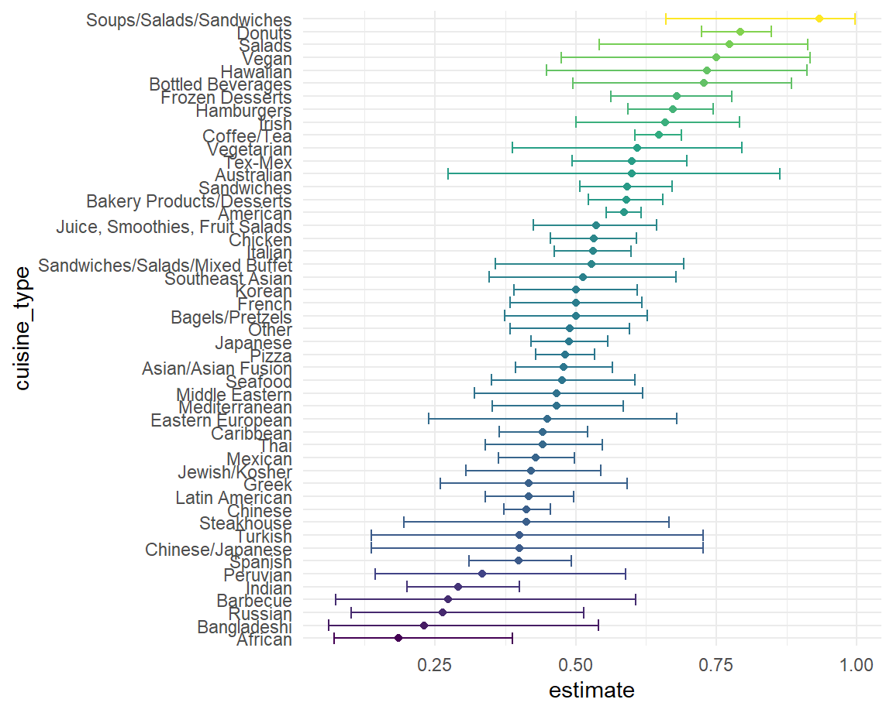
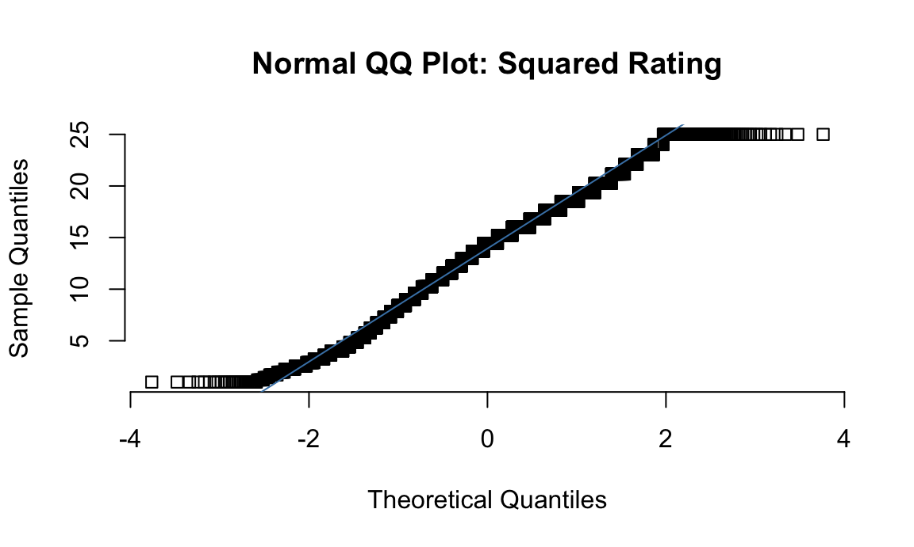
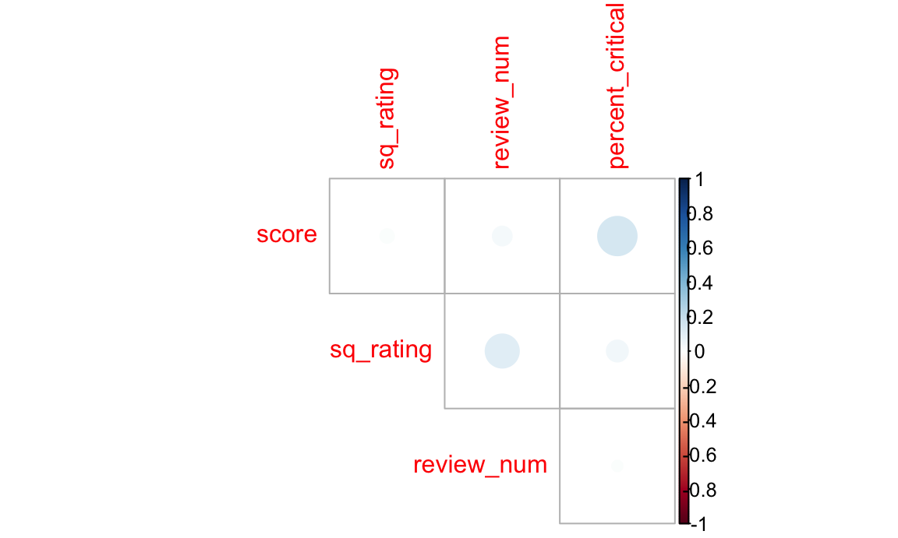

Statistical Analysis
2022-12-10
Dataset Overview
Data Wrangling
In this first step, we wrangle the data such that it is suitable for statistical analysis and provide an overview for the dataset of use. In particular, we create a new numeric variable, percent_critical, that accounts for the percentage of critical flags a given restaurant receives out of all violations. Moreover, we factorize categorical variables price, borough, and grade; before finally making distinct each restaurant such that each represent a unique row.
library(readr)
# dt = read_csv("data/inspection_sub_all_date.csv")
df = read_csv("data/inspection_sub_latest_date.csv") %>%
mutate(price = fct_recode(price, "1" = "$", "2" = "$$", "3" = "$$$", "4" = "$$$$"),
boro = fct_reorder(boro, rating),
grade = fct_relevel(grade, "A")) %>%
group_by(camis) %>%
mutate(percent_critical = sum(critical_flag == "Critical")/n())
# Make distinction such that each restaurant is its unique row.
df <- df %>%
distinct(camis, .keep_all = TRUE) %>%
ungroup() %>% # select desired variables
select(dba, boro, grade, zipcode, cuisine_description, inspection_type, rating, review_num, price, percent_critical, score)
# Display data
head(df)## # A tibble: 6 × 11
## dba boro grade zipcode cuisi…¹ inspe…² rating revie…³ price perce…⁴ score
## <chr> <fct> <fct> <dbl> <chr> <chr> <dbl> <dbl> <fct> <dbl> <dbl>
## 1 WILKEN… Broo… A 11234 Sandwi… Cycle … 3.2 57 2 0 2
## 2 P & S … Manh… A 10025 Americ… Cycle … 4 605 2 0.333 12
## 3 CARVEL Stat… A 10305 Frozen… Cycle … 2.5 25 2 0.5 7
## 4 KOSHER… Broo… A 11230 Jewish… Cycle … 4.1 68 1 0.333 13
## 5 OLD TO… Manh… A 10003 Americ… Cycle … 3.6 410 2 0.333 13
## 6 7B BAR Manh… A 10009 Americ… Cycle … 3.4 211 1 0.667 10
## # … with abbreviated variable names ¹cuisine_description, ²inspection_type,
## # ³review_num, ⁴percent_criticalSummary of Wrangled Data
Now, a brief summary of our dataset to use.
df %>%
ungroup() %>%
select(boro, grade, price) %>%
mutate(boro = fct_infreq(boro)) %>%
tbl_summary(
by = boro,
missing_text = "(Missing)",
statistic = list(
all_categorical() ~ "{n} ({p}%)"
)) %>%
bold_labels() %>%
italicize_levels() | Characteristic | Manhattan, N = 2,4221 | Brooklyn, N = 1,6711 | Queens, N = 1,3021 | Bronx, N = 4241 | Staten Island, N = 2341 |
|---|---|---|---|---|---|
| grade | |||||
| A | 1,280 (71%) | 913 (74%) | 666 (74%) | 194 (71%) | 148 (77%) |
| B | 41 (2.3%) | 39 (3.1%) | 29 (3.2%) | 6 (2.2%) | 4 (2.1%) |
| C | 16 (0.9%) | 8 (0.6%) | 12 (1.3%) | 8 (2.9%) | 0 (0%) |
| N | 225 (13%) | 126 (10%) | 109 (12%) | 37 (14%) | 27 (14%) |
| Z | 233 (13%) | 156 (13%) | 90 (9.9%) | 27 (9.9%) | 12 (6.3%) |
| (Missing) | 627 | 429 | 396 | 152 | 43 |
| price | |||||
| 1 | 653 (28%) | 668 (41%) | 542 (44%) | 209 (53%) | 92 (41%) |
| 2 | 1,420 (60%) | 856 (53%) | 655 (53%) | 171 (44%) | 123 (55%) |
| 3 | 240 (10%) | 76 (4.7%) | 34 (2.7%) | 9 (2.3%) | 8 (3.6%) |
| 4 | 49 (2.1%) | 10 (0.6%) | 9 (0.7%) | 2 (0.5%) | 2 (0.9%) |
| (Missing) | 60 | 61 | 62 | 33 | 9 |
| 1 n (%) | |||||
df %>%
ungroup() %>%
select(score,rating, review_num) %>%
tbl_summary(
missing_text = "(Missing)",
statistic = list(
all_continuous() ~ "{mean} ({sd})"
)) %>%
bold_labels() %>%
italicize_levels() | Characteristic | N = 6,0531 |
|---|---|
| score | 17 (13) |
| (Missing) | 130 |
| rating | 3.62 (0.79) |
| review_num | 209 (459) |
| 1 Mean (SD) | |
From these results, we observe that:
Manhattan has the most restaurants (40% of all restaurants in the city), followed by Brooklyn (28%), Queens (22%), Bronx (6.6%), and Staten Island (3.4%).
The “score” variable has 100 missing values with mean 18 and standard deviation 14.
The “grade” variable has 1,399 missing values with most of the restaurants receiving As (70% of all restaurants).
Each restaurant has average rating 3.78 with standard deviation 0.68.
Each restaurant has on average 232 reviews with standard deviation 485.
The most common price range for restaurants is between $11-$30 (60%), followed by under $10 (31%).
Chi-square Test
Now, we conduct chi-square tests to get a sense of whether boro and price range has an effect on the inspection grade that a given restaurant receives. Since the inspection grades reflect the extent of health hazards one might take risk of in dining at that particular restaurant and has been required by the City since 2010 for restaurants to post letter grades that correspond to scores received from sanitary inspections, this investigation might shed light on the whether dining at a particular boro or price range increases one’s danger of food poisoning or other food-borne diseases.
Inspection Grades and Boroughs
We try to determine whether there is a relationship between boroughs and restaurants’ inspection grades. Our hypothesis is that there is no difference in the number of restaurants across the five grades across the five boroughs in NYC. We will perform the chi-square test to verify our assumption.
\(H0\): the expected number of restaurants in each grades are the same across all boroughs.
\(H1\): the expected number of restaurants in each grades are not same across all boroughs.
grade_boro =
df %>%
ungroup() %>%
filter(grade %in% c("A", "B", "C")) %>%
count(boro, grade) %>%
pivot_wider(
names_from = "grade",
values_from = "n") %>%
replace(is.na(.), 0)
# Display results table.
grade_boro %>%
knitr::kable(caption = "Results Table",
col.names = c("Borough", "A", "B", "C"))| Borough | A | B | C |
|---|---|---|---|
| Bronx | 194 | 6 | 8 |
| Staten Island | 148 | 4 | 0 |
| Queens | 666 | 29 | 12 |
| Brooklyn | 913 | 39 | 8 |
| Manhattan | 1280 | 41 | 16 |
grade_boro = grade_boro %>%
data.matrix() %>%
subset(select = -c(boro))
# Perform chi-square test
chisq.test(grade_boro)##
## Pearson's Chi-squared test
##
## data: grade_boro
## X-squared = 17.93, df = 8, p-value = 0.02176Interpretation: Since p-value is less than 0.05, we reject the null hypothesis at 95% significant level and conclude that the inspection grades of restaurants are significantly different by boroughs. In other words, dining at different boroughs in NYC carries different risk of food-related health hazards.
Price and Inspection Grade
Now, the reason that many might choose a restaurant of higher price range out of safety concerns. In this part we investigate if such is true with restaurants in NYC: does price range of a restaurant has an effect on its safety levels?
\(H0\): There is no difference in the inspection grade received among the four different groups of price range.
\(H1\): There is a difference in the inspection grade received among the four different groups of price range.
price_grade = df %>%
select(boro, score, grade, rating, review_num, price) %>%
drop_na(price, grade) %>%
filter(grade %in% c("A", "B", "C")) %>%
group_by(price, grade) %>%
summarise(n = n()) %>%
pivot_wider(
names_from = grade,
values_from = n
) %>%
replace(is.na(.), 0) %>%
mutate(price = fct_recode(price, "<10"="1", "11-30"="2", "31-60"="3", ">60"="4"))
price_grade %>%
knitr::kable(caption = "Results Table",
col.names = c("Price($)", "A", "B", "C"))| Price($) | A | B | C |
|---|---|---|---|
| <10 | 1228 | 54 | 19 |
| 11-30 | 1623 | 57 | 23 |
| 31-60 | 194 | 3 | 1 |
| >60 | 44 | 0 | 0 |
price_grade = price_grade %>%
data.matrix() %>%
subset(select = -c(price))
# Perform chi-square test
chisq.test(price_grade)##
## Pearson's Chi-squared test
##
## data: price_grade
## X-squared = 7.5714, df = 6, p-value = 0.2712Interpretation: The result of chi-square shows that p-value is more than 0.05, so we fail to reject the null hypothesis at 95% significant level and conclude that we don’t have sufficient evidence to claim that the inspection grades of restaurants differ by price scales of restaurants. In other words, the results from this analysis tells us that the urban myth that dining in more expensive restaurant avoids health hazards is unfounded.
Proportion Test
Price and Receiving “A”
Now, we want to see whether receiving grade A is equally common among restaurants of all four price scales. To do this, we will conduct a proportion test.
\(H0\): Receiving A is equally common among restaurants fo all four price scales.
\(H1\): Receiving A is not equally common among restaurants for all four price scales.
total = df %>%
group_by(price) %>%
summarise(total = n()) %>%
drop_na()
n_a = df %>%
ungroup() %>%
count(price, grade) %>%
filter(grade == "A")
join = left_join(total, n_a)
prop.test(join$n, join$total)##
## 4-sample test for equality of proportions without continuity correction
##
## data: join$n out of join$total
## X-squared = 23.36, df = 3, p-value = 3.397e-05
## alternative hypothesis: two.sided
## sample estimates:
## prop 1 prop 2 prop 3 prop 4
## 0.5674677 0.5032558 0.5286104 0.6111111#join = join %>%
# mutate(prop = n/total) %>%
# select(price, prop)Interpretation: since p-value << 0.05, at confidence level of 95%, we reject the null hypothesis and conclude that the proportion of restaurants receiving “A” is different among four datasets. Therefore, although the results from chi-square test tells us that dining at a particular price does not affect the overall health hazard that one faces, nonetheless the price range does seem to have an effect on whether the restaurant one dines at received an “A” as inspection grade.
Proportion of “A”s received for Each Cuisine
Since we have received a statistically significant result for price range against receiving an “A” grade, what about the proportion of restaurants receiving “A” for each cuisine type? To answer this question, we group data by cuisine type and perform proportion test on the percentage of A received.
# create dataset grouped by cuisine_type
cuisine_df <- df %>%
ungroup() %>%
group_by(cuisine_description) %>%
summarise(total_evals = n(),
a_evals = sum(grade == "A", na.rm = TRUE))
test_full = cuisine_df %>%
mutate(prop_test = map2(a_evals, total_evals, ~prop.test(.x, .y) %>%
broom::tidy())) %>%
unnest() %>% # pull estimated proportion and confidence intervals
select(cuisine_description, estimate, lower_CI = conf.low, upper_CI = conf.high)
# Display result
test_full %>%
mutate(cuisine_type = fct_reorder(cuisine_description, estimate)) %>%
ggplot(aes(x = cuisine_type, y = estimate, ymin = lower_CI, ymax = upper_CI, col = estimate)) +
geom_point() +
geom_errorbar() +
coord_flip() +
theme(legend.position = "none")
Regression model
In this step, we perform multiple linear regression (MLR) to ascertain the optimal model for predicting Yelp rating.
Data Wrangling and Transformation
In this step, we check whether our data satisfies the normality assumptions for multiple linear regression and perform transformations to fit the assumptions if unsatisfied.
# sided histogram for each untransformed numeric variable
par(mfrow = c(2, 2))
hist(df$rating, main = "Histogram for Rating", xlab = "rating", ylab = "frequency")
hist(df$score, main = "Histogram for Score", xlab = "rating", ylab = "frequency")
hist(df$review_num, main = "Histogram for Number of Reviews", xlab = "rating", ylab = "frequency")
hist(df$percent_critical, main = "Histogram for Percentage of Flags Critical", xlab = "rating", ylab = "frequency")
As shown in the histograms, rating is severely positively-skewed, percent_critical_flag is slightly positively skewed, score is moderately positively-skewed, and rating is negatively skewed. However, MLR only requires the assumption that the response variable be normally distributed. Therefore, we square-transform the rating variable and use a QQ plot to confirm that normality is not severely violated.
# square-transform rating
reg_df = df %>%
filter(!is.na(score)) %>%
mutate(sq_rating = rating^2) %>%
ungroup() %>%
select(sq_rating, boro, score, review_num, price, percent_critical)
# side-by-side qq-plot for transformed numeric variables
qqnorm(reg_df$sq_rating, main = "Normal QQ Plot: Squared Rating", pch = 0.01, frame = FALSE)
qqline(reg_df$sq_rating, col = "steelblue")
Finally, we check for if the continuous independent variables are correlated.
cont_df <- subset(reg_df, select=c("score", "sq_rating", "review_num", "percent_critical"))
# correlation plot
corrplot::corrplot(cor(cont_df), diag = FALSE, type = "upper")
As such, we expect some interaction between percent_critical and score, and also a significant correlation between squared-rating and review_num. In this way, we postulate that a model with dependent variables percent critical, score, and their interaction, as well as review_num and price would be reasonable in predicting square rating.
fit_1 = lm(sq_rating ~ percent_critical * score + price + review_num, data = reg_df)Criterion-Based Approach and Backward Elimination to Model Selection
We now turn our attention to choosing the best model for our data. Since the number of our predictor is not huge, we employ a criterion-based approach to select independent variables.
b = leaps::regsubsets(sq_rating ~ ., data = reg_df)
rs = summary(b)
# plot of Cp and Adj-R2 as functions of parameters
par(mfrow = c(1,2))
plot(2:9, rs$cp, xlab = "No. of parameters", ylab = "Cp Statsitic")
abline(0, 1)
plot(2:10, rs$adr2, xlab = "No. of parameters", ylab = "Adj R2")
As such, both the Cp criterion and the Adjusted \(R^2\) suggests that we should consider all parameters. We fit a model accounting for all independent variables in the regression dataset.
fit_2 <- lm(sq_rating ~ ., data = reg_df)
# display results
summary(fit_2)##
## Call:
## lm(formula = sq_rating ~ ., data = reg_df)
##
## Residuals:
## Min 1Q Median 3Q Max
## -14.5257 -3.5012 0.0921 3.3081 14.5721
##
## Coefficients:
## Estimate Std. Error t value Pr(>|t|)
## (Intercept) 10.2961322 0.2888538 35.645 < 2e-16 ***
## boroStaten Island 0.1613085 0.4241444 0.380 0.7037
## boroQueens 1.2678006 0.2966795 4.273 1.96e-05 ***
## boroBrooklyn 1.8938599 0.2887239 6.559 5.88e-11 ***
## boroManhattan 1.5391989 0.2844937 5.410 6.55e-08 ***
## score -0.0028023 0.0050958 -0.550 0.5824
## review_num 0.0006332 0.0001487 4.258 2.09e-05 ***
## price2 2.5297977 0.1439771 17.571 < 2e-16 ***
## price3 2.9820302 0.2922580 10.203 < 2e-16 ***
## price4 4.0964899 0.6203502 6.604 4.38e-11 ***
## percent_critical 0.6048031 0.2466610 2.452 0.0142 *
## ---
## Signif. codes: 0 '***' 0.001 '**' 0.01 '*' 0.05 '.' 0.1 ' ' 1
##
## Residual standard error: 5.006 on 5698 degrees of freedom
## (214 observations deleted due to missingness)
## Multiple R-squared: 0.08438, Adjusted R-squared: 0.08278
## F-statistic: 52.51 on 10 and 5698 DF, p-value: < 2.2e-16Finally, since the “score” variable comes out to be not significantly correlated with the response variable sq_rating under any circumstances, we employ the backwards approach.
step(fit_2, direction = "backward")## Start: AIC=18400.98
## sq_rating ~ boro + score + review_num + price + percent_critical
##
## Df Sum of Sq RSS AIC
## - score 1 7.6 142793 18399
## <none> 142785 18401
## - percent_critical 1 150.7 142936 18405
## - review_num 1 454.4 143240 18417
## - boro 4 1502.8 144288 18453
## - price 3 8650.7 151436 18731
##
## Step: AIC=18399.28
## sq_rating ~ boro + review_num + price + percent_critical
##
## Df Sum of Sq RSS AIC
## <none> 142793 18399
## - percent_critical 1 144.2 142937 18403
## - review_num 1 452.0 143245 18415
## - boro 4 1502.9 144296 18451
## - price 3 8648.3 151441 18729##
## Call:
## lm(formula = sq_rating ~ boro + review_num + price + percent_critical,
## data = reg_df)
##
## Coefficients:
## (Intercept) boroStaten Island boroQueens boroBrooklyn
## 1.026e+01 1.675e-01 1.267e+00 1.896e+00
## boroManhattan review_num price2 price3
## 1.539e+00 6.314e-04 2.525e+00 2.978e+00
## price4 percent_critical
## 4.099e+00 5.859e-01As such, we fit this model selected by the backwards approach.
fit_3 <- lm(sq_rating ~ boro + review_num + price + percent_critical, data = reg_df)
# display result
summary(fit_3)##
## Call:
## lm(formula = sq_rating ~ boro + review_num + price + percent_critical,
## data = reg_df)
##
## Residuals:
## Min 1Q Median 3Q Max
## -14.5088 -3.4922 0.0995 3.2997 14.5739
##
## Coefficients:
## Estimate Std. Error t value Pr(>|t|)
## (Intercept) 1.026e+01 2.804e-01 36.585 < 2e-16 ***
## boroStaten Island 1.675e-01 4.240e-01 0.395 0.6928
## boroQueens 1.267e+00 2.967e-01 4.270 1.99e-05 ***
## boroBrooklyn 1.896e+00 2.887e-01 6.567 5.57e-11 ***
## boroManhattan 1.539e+00 2.845e-01 5.411 6.51e-08 ***
## review_num 6.314e-04 1.487e-04 4.247 2.20e-05 ***
## price2 2.525e+00 1.437e-01 17.570 < 2e-16 ***
## price3 2.978e+00 2.921e-01 10.193 < 2e-16 ***
## price4 4.099e+00 6.203e-01 6.608 4.25e-11 ***
## percent_critical 5.859e-01 2.442e-01 2.399 0.0165 *
## ---
## Signif. codes: 0 '***' 0.001 '**' 0.01 '*' 0.05 '.' 0.1 ' ' 1
##
## Residual standard error: 5.006 on 5699 degrees of freedom
## (214 observations deleted due to missingness)
## Multiple R-squared: 0.08433, Adjusted R-squared: 0.08289
## F-statistic: 58.32 on 9 and 5699 DF, p-value: < 2.2e-16Cross Validation
Finally, we perform cross-validation to compare our three models in terms of cross-validation prediction error.
library(modelr)
cv_df <- crossv_mc(reg_df, n = 100) %>%
mutate(
train = map(train, as_tibble),
test = map(test, as_tibble)) %>%
mutate(
fit_1 = map(train, ~lm(sq_rating ~ percent_critical * score + price + review_num, data = .x)),
fit_2 = map(train, ~lm(sq_rating ~ ., data = .x)),
fit_3 = map(train, ~lm(sq_rating ~ boro + review_num + price + percent_critical, data = .x))
) %>%
mutate(
rmse_fit_1 = map2_dbl(fit_1, test, ~rmse(model = .x, data = .y)),
rmse_fit_2 = map2_dbl(fit_2, test, ~rmse(model = .x, data = .y)),
rmse_fit_3 = map2_dbl(fit_3, test, ~rmse(model = .x, data = .y))
)
# Display RMSE results
cv_df %>%
summarise(fit1_mean_error = mean(rmse_fit_1),
fit2_mean_error = mean(rmse_fit_2),
fit3_mean_error = mean(rmse_fit_3)) %>%
knitr::kable(digits = 3)| fit1_mean_error | fit2_mean_error | fit3_mean_error |
|---|---|---|
| 5.019 | 4.999 | 4.998 |
# Show the distribution of RMSEs using violin plots
cv_df %>%
select(starts_with("rmse")) %>%
pivot_longer(
everything(),
names_to = "model",
values_to = "rmse",
names_prefix = "rmse") %>%
mutate(model = fct_inorder(model)) %>%
ggplot(aes(x = model, y = rmse)) +
geom_violin()
As such, we can see that all three of our models perform very similarly.